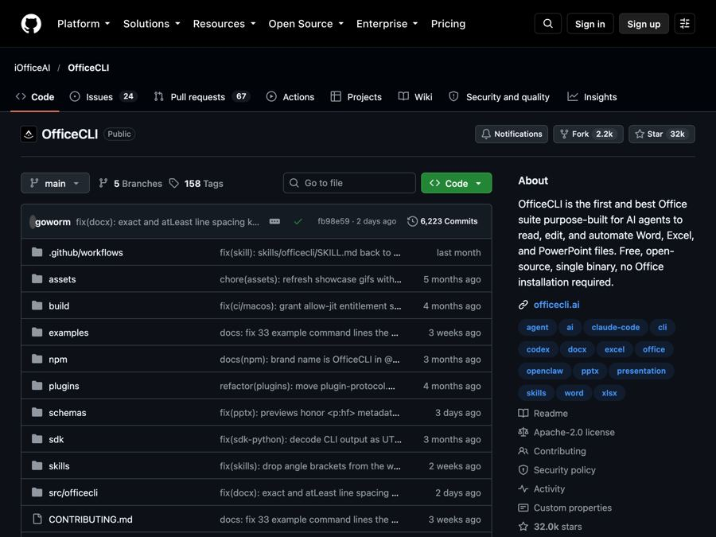
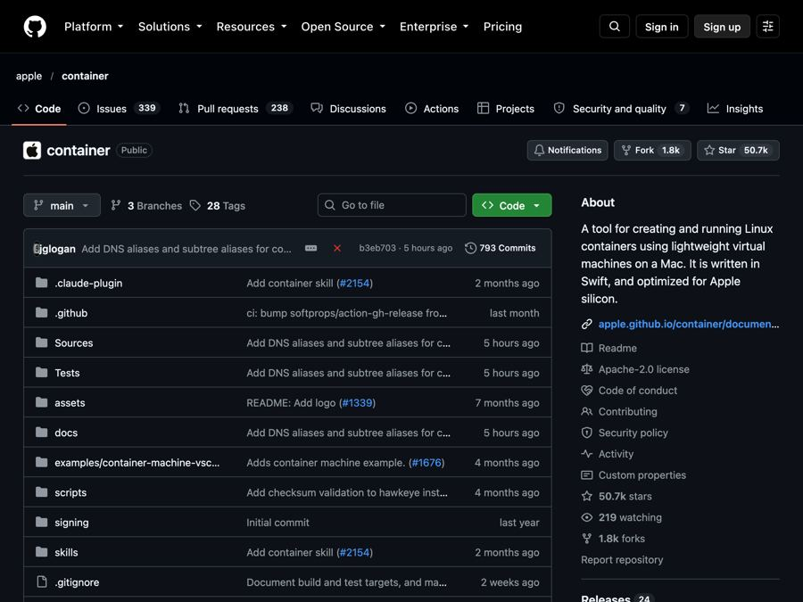
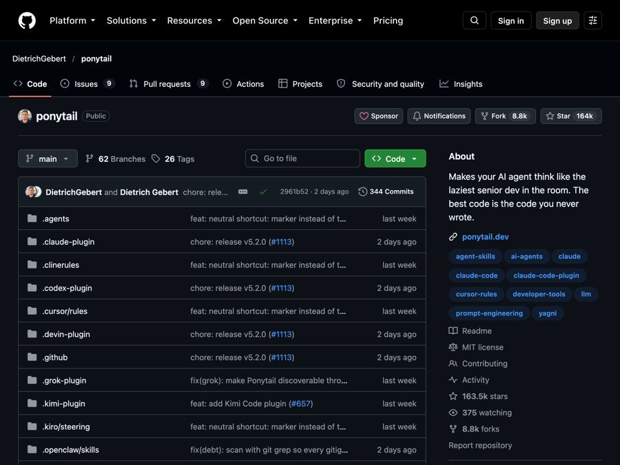
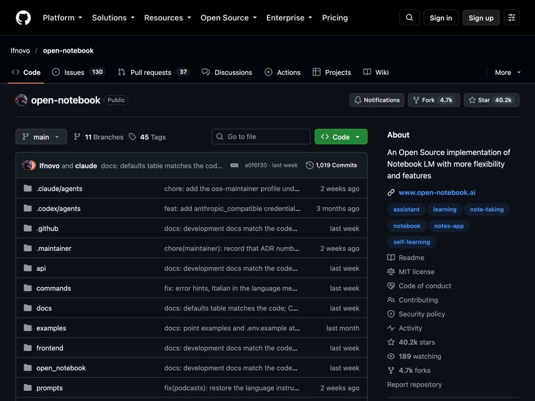
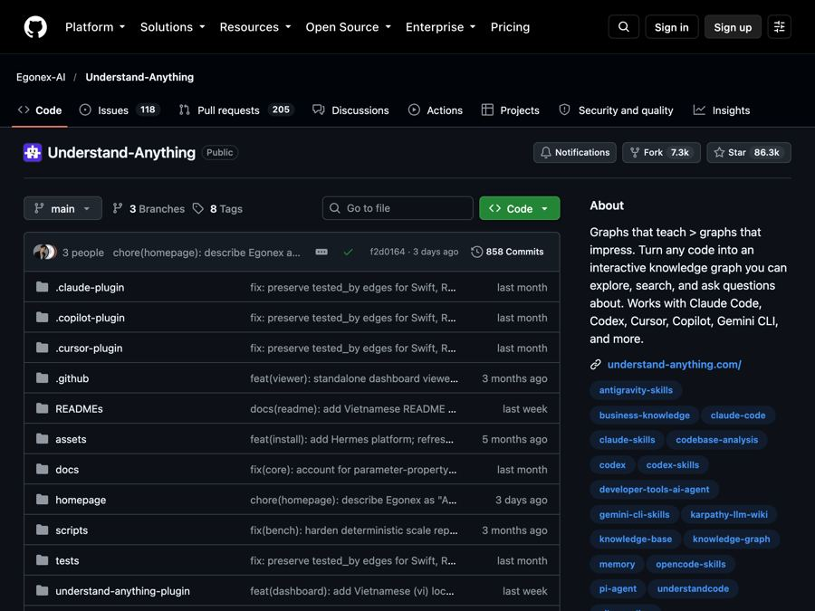
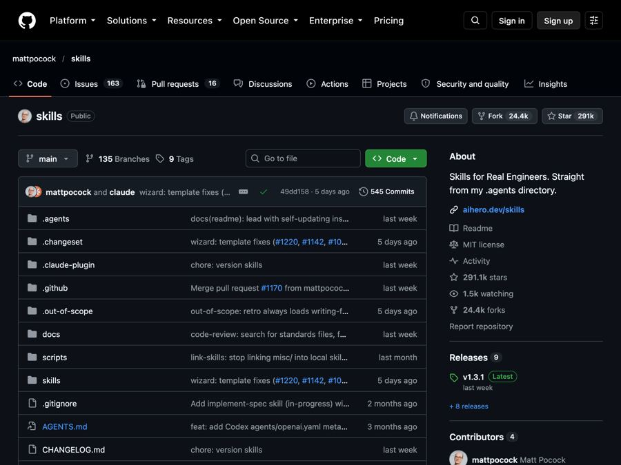
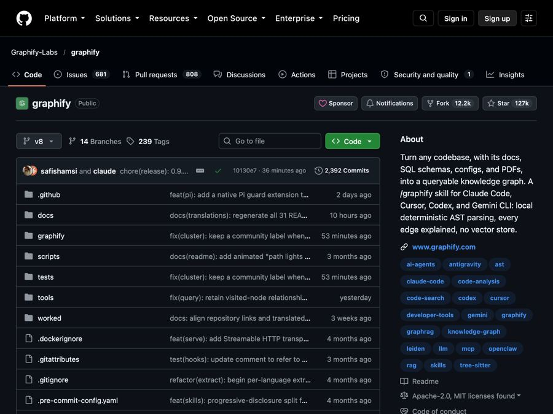
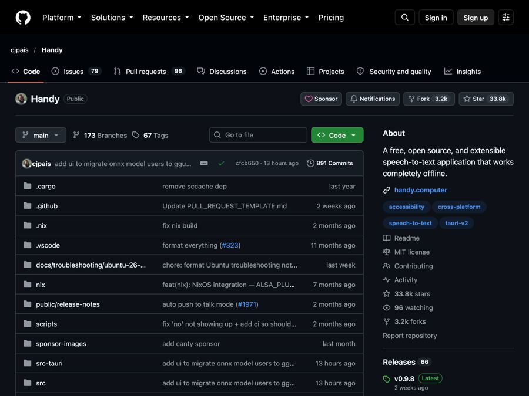
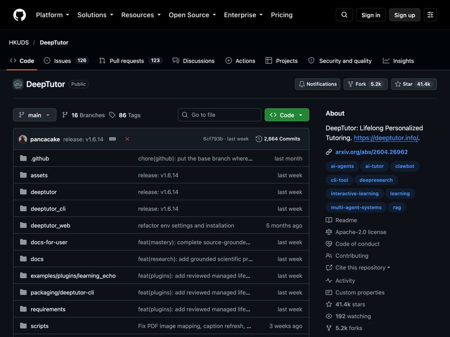

AI for Students
Free tools and news that matter if you work in Students.

Tolaria: A Free Offline Notes App You Fully Own (2026)
Tolaria is a free offline notes app for Mac, Windows and Linux. Your notes are plain files you own, with full version history and no account.

DeepSeek Harness: DeepSeek's Free Open-Source AI Agent
DeepSeek Harness is DeepSeek's free, open-source AI agent. Every feature is a plugin you can swap or build, and it runs in your browser with one command.

OfficeCLI: Free AI for Word, Excel and PowerPoint Files
OfficeCLI is free AI for Word, Excel and PowerPoint. It lets AI helpers create, read and edit real Office files, with no Office install needed.

Apple Container: Run Linux Containers on Mac for Free
Apple Container is Apple's free tool to run Linux containers on Mac. Each one runs in a tiny virtual machine, tuned for Apple silicon and macOS 26.

Ponytail Skill: Make Your AI Coder Write Less Code (2026)
The Ponytail skill is one free prompt that makes your AI coding helper reuse what exists, write half the code, and still keep the tests and safety checks.

Open Notebook: A Free NotebookLM Alternative You Own
Open Notebook is a free NotebookLM alternative you run yourself. Chat with your PDFs and videos, get cited answers, and turn notes into podcasts.

Understand Anything: Visualize Any Codebase for Free (2026)
Understand Anything is a free plugin that lets you visualize any codebase as a clickable map with plain-English notes, guided tours and a chat for questions.

Matt Pocock Skills: Free Claude Code Skills That Work
Matt Pocock skills are free add-ons that make Claude Code, Codex and Copilot ask better questions, test their work and keep your code tidy.

Graphify Knowledge Graph: Free Project Map for AI Helpers
A graphify knowledge graph turns your code, docs, PDFs and videos into one clickable map, so your AI helper looks things up instead of guessing.

Karpathy autoresearch: AI That Runs Experiments Overnight
Karpathy autoresearch lets an AI agent tweak, train and test a tiny AI model on its own overnight, keeping only the changes that make it better.

Handy: Free Offline Voice Typing App (2026 Guide)
Handy is a free offline voice typing app. Press a key, talk, and your words appear in any app on Mac, Windows or Linux. Your voice stays on your computer.

DeepTutor: Free AI Tutor That Learns From Your Notes
DeepTutor is a free AI tutor that answers questions, makes quizzes and builds study plans from your own notes, books and videos. Here's how to set it up.